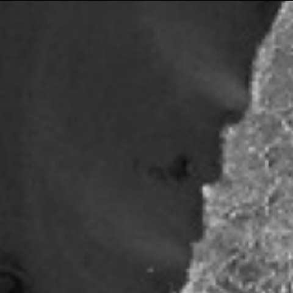

Journal articlePublished November 2026
TARS: a framework for marine oil spill triage using AIS anomaly detection and SAR browse imagery
Applied Geomatics 18(4), 182 · Springer Nature
Ship-tracking anomalies decide where to look; small, free satellite previews decide if there is oil.
- 0.909 AUC in-region
- 3,400× smaller input
- 2 sea regions
- Open source code

Reference
Miranda J, Nair N, Shringare G, Hussain N, Bhadange K, Tripathy AK (2026) TARS: a framework for marine oil spill triage using AIS anomaly detection and SAR browse imagery. Appl Geomat 18:182. https://doi.org/10.1007/s12518-026-00837-5
BibTeX
@article{miranda2026tars,
title = {{TARS}: a framework for marine oil spill triage using
{AIS} anomaly detection and {SAR} browse imagery},
author = {Miranda, Janice and
Nair, Navya and
Shringare, Gargi and
Hussain, Nazeefa and
Bhadange, Kirti and
Tripathy, Amiya Kumar},
journal = {Applied Geomatics},
publisher = {Springer Nature},
year = {2026},
volume = {18},
number = {4},
pages = {182},
doi = {10.1007/s12518-026-00837-5}
}